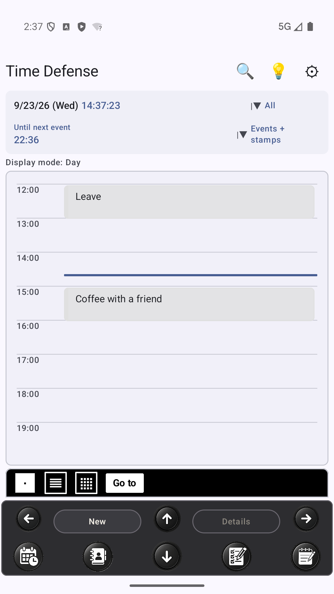
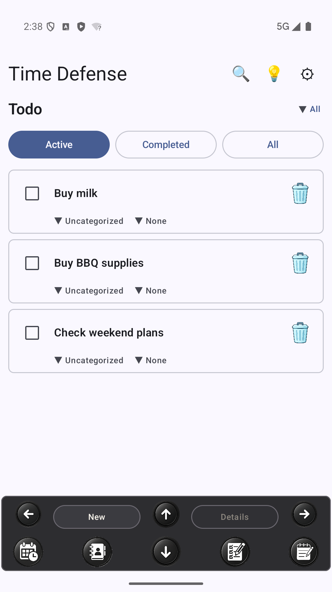
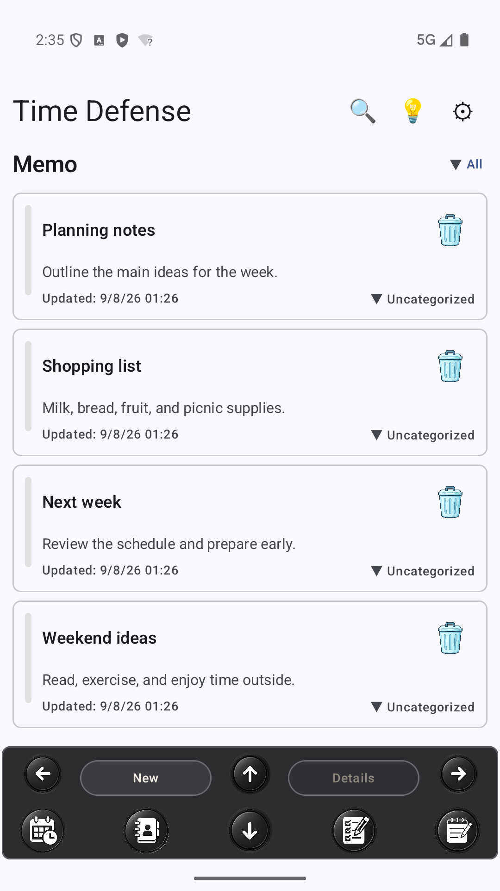
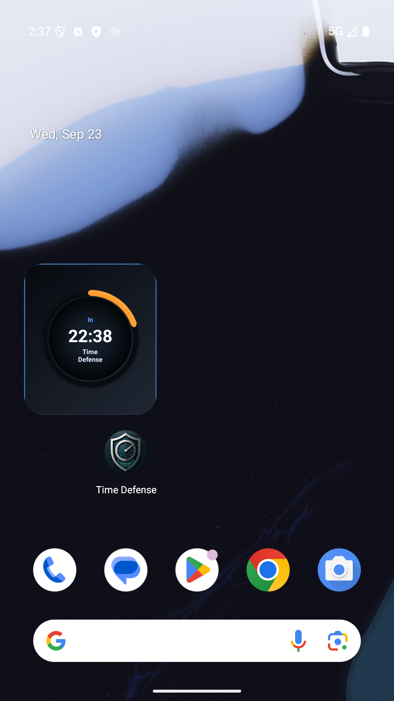

Time Defense · A calendar for Android
Your Day, Not Just Your Plans
Your Personal Android Calendar
A personal Android calendar for plans, tasks and notes, with time until your next event.

Tap or click for a closer look.
Look inside
Your Day in One App
Check your calendar. Keep a to-do list. Return to a note. See the time before your next event on your home screen.
These are separate views of Time Defense—not a single combined screen.
Plans
Check your events and the time before the next one in Day view.
Tasks
Keep everyday tasks in the Todo list.

Tap or click to enlargeNotes (Memo)
Return to planning notes, a shopping list, and weekend ideas.

Tap or click to enlargeTime until your next event
A remaining-time widget on your Android home screen.

Tap or click to enlargeSee if it fits the way you plan.
For everyday plans
A Calendar for Your Day
Start with your plans. Keep everyday tasks in Todo and ideas in Notes (Memo). When you want to check the time until your next event, use the home-screen widget.
A shopping list can sit in Notes. A task can sit in Todo. Your events stay in the calendar. Choose the view that fits what you need to check.
See if it fits the way you plan.
Look at the actual interface and decide whether these tools belong in your day.
Try it with your own day
30 days to explore Pro.
Your 30-day Pro trial starts when you first open the app. No purchase is needed to begin. When the trial ends, Free use continues with limits unless you choose Pro. There is no automatic charge just because the trial ends.
Pro is optional. Review the current price, billing period, and renewal terms before choosing it. The trial's no-automatic-charge condition does not describe renewal after a Pro purchase.
Before you begin
A few things to know.
Where are tasks and notes?
Todo and Memo are separate screens in the same app. “Notes” on this page refers to Memo.
What does the home widget show?
Time remaining until the next eligible scheduled event. Check the app for your plan details.
Is this a team scheduling or shared family calendar page?
This page presents a personal Android calendar. It does not offer team booking or shared family editing.
Does this page offer automatic task scheduling or syncing with other services?
No such capability is offered here. The screens show a calendar, a to-do list, and notes in one app.
Time Defense Calendar
See if it fits the way you plan.
Try Pro features for 30 days from first app open. Then continue with Free limits unless you choose Pro.